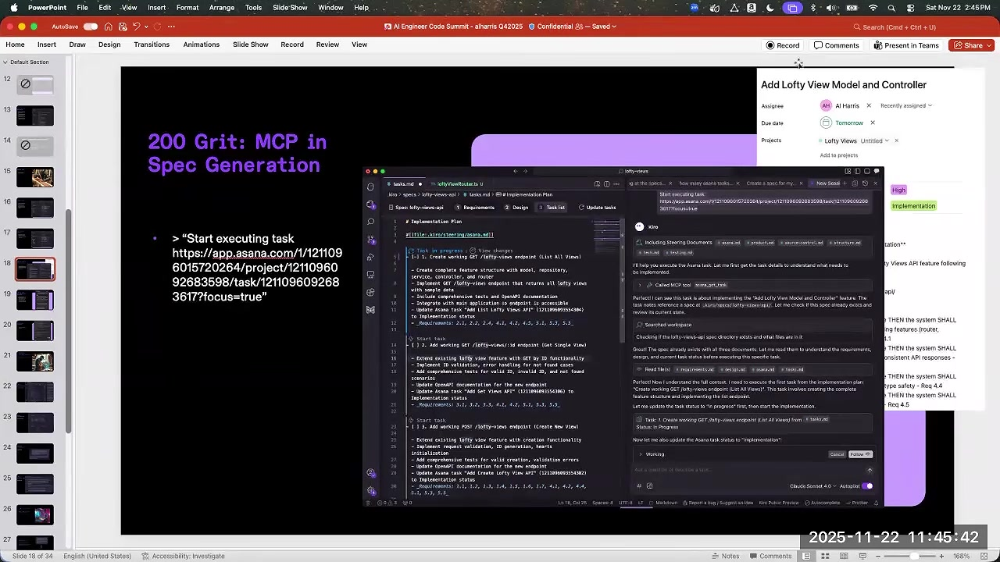
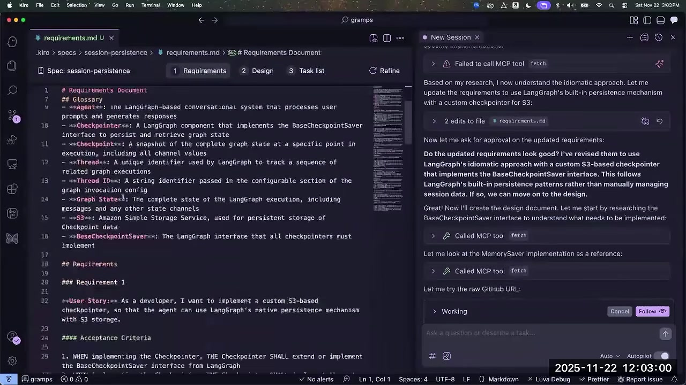
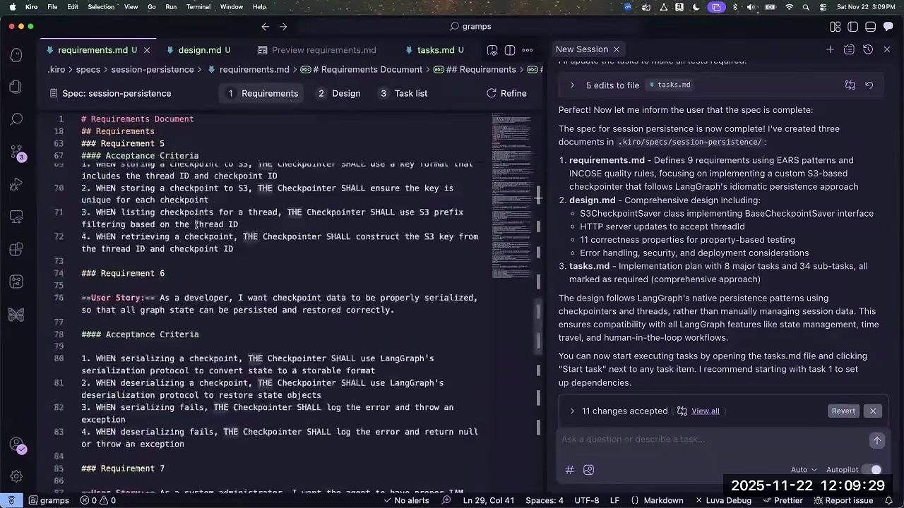
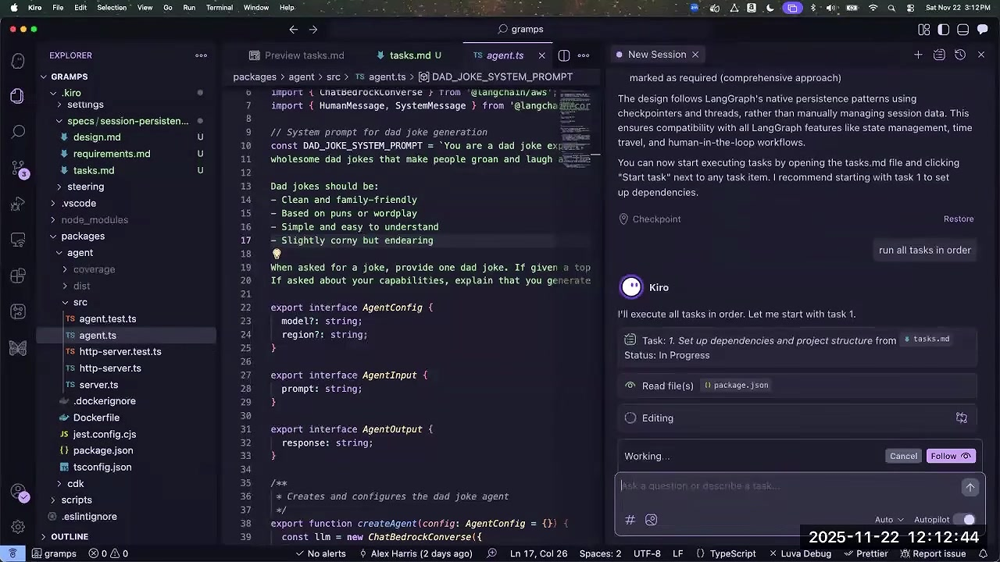

1. 规范、EARS 与 MCP
00:00:12 ↗Al Harris · 主讲〔开场音乐。〕没听过 Kiro 的朋友，Kiro 是一款 Agent IDE。我们在刚过去的周一，应该是十七日，正式发布；公开预览则是七月十四日左右，已经收集了几个月用户反馈。今天讲如何用规范驱动开发打磨 AI 工具箱。刚举手调查，大约四分之一的人熟悉这个概念。我叫 Al Harris，是 Amazon 的 Principal Engineer，过去一年在做 Kiro。团队很小，最早就是三四个人挤在小房间里，琢磨怎样改善用户的软件开发生命周期。
00:01:00 ↗Al Harris · 主讲我们受命做一种改善规范驱动开发体验的工具，资金来自支持 Q Developer 等产品的组织，但有意走一条不同于 Q 生态的产品路线。目标是让 AI 开发扩展到更复杂的问题，提高对 Agent 的控制，改善输出代码的质量和可靠性。
00:01:32 ↗Al Harris · 主讲我们的方案是规范驱动。Vibe coding 很好，但很依赖操作者是否做对：我要亲自给系统护栏、让 Agent 经过严格流程。我们希望把完整软件开发生命周期体现进去，尊重行业过去二十五、三十年的经验。瀑布、敏捷、极限编程等方法，都有表达系统应当做什么的方式，我们不该忽略这些积累。
00:02:12 ↗Al Harris · 主讲这张动画原本只有左边菱形，效果更好些。我想表达的是围绕想法反复迭代。我觉得软件开发一半是在发现需求，而发现并不只是坐在那里想系统应该做什么、能做什么。实际做出一些输出、快速反馈，才会让它工作得更好。比如从输入需求做到设计，发现某个方案有未考虑的副作用，就应反馈回需求。我们要压缩这整个生命周期，把结构带进开发流程。
00:03:00 ↗Al Harris · 主讲保留设计过程产生的产物：产品经理或开发者写的需求、验收标准，也就是最终什么叫成功；再是与开发团队、利益相关者审阅的设计，明确准备建什么；然后实现。希望它们都能处于紧密的内部循环里，这就是规范驱动开发最初的意思。

00:03:23 ↗Al Harris · 主讲Kiro 当前，或者至少正式发布前的流程，是把用户提示转成一组清楚且带验收标准的需求。验收标准用 EARS，Easy Approach to Requirements Syntax，表达，也就是一种结构化自然语言。最初四个半月，这看起来只是个有趣选择；这次周一正式发布后，我们开始兑现它的进一步价值：属性测试。EARS 需求可以转成系统属性，也就是希望保持的不变量。
00:04:14 ↗Al Harris · 主讲用过 Python 的 Hypothesis、Node 的 fast-check，或者 Clojure spec 的朋友会熟悉这种测试。它试图找到一个能证伪目标不变量的输入，只要找出一个反例，就说明需求没有满足。如果找不到，就能有较高信心；但“较高”这个词承担了很多工作，仍取决于测试写得好不好。稍后还会讲属性测试，也就是 PBT。
00:05:09 ↗Al Harris · 主讲这是把结构化自然语言需求一路连到最终代码的第一步。如果代码属性满足最初需求，我们就更有信心交付了预期软件。整个流程是提示、需求、设计、定义系统属性、任务列表，再运行这些任务。规范于是成为系统的自然语言表示，包含功能和非功能方面的约束、关注点，是一组共同交付的产物。
00:05:57 ↗Al Harris · 主讲我把 Spec 看成三件事。第一，在某个时间点 T 表示系统状态的一组产物；第二，推动可靠高质量交付的结构化流程，包含需求、设计、执行；第三，建立在其上的工具和系统，帮助得到可重复结果，属性测试就是例子。另一个不太显眼的例子是需求验证：扫描过度模糊或无效约束，比如互相冲突的需求，并用经典自动推理方法帮助消除歧义。
00:06:55 ↗Al Harris · 主讲我也能继续介绍 Kiro 功能，但今天更关心规范驱动开发。常见功能都有：Steering，类似记忆和 Cursor Rules；MCP、图像以及软件钩子。先暂停一下，现场下载过 Kiro 或其他工具的朋友，在进入具体实践前有问题吗？没有，也许是好事，也可能我讲得还不够有趣。下面进入具体细节。
00:07:43 ↗Al Harris · 主讲这是我几个月前讲在 Kiro 中使用 MCP 的材料。有些用户觉得我们规定的流程太结构化，缺乏外部数据和其他所需能力。幻灯片顺序有点乱，这里还有一张 AI 生成图。和其他工具一样，Kiro 可以集成 MCP，但很多人没有充分在“编写规范”时用它。其实需求生成、设计、实现，每一阶段都可以用，接下来逐一举例。

00:08:42 ↗Al Harris · 主讲设置很简单：Kiro 的小幽灵面板里，找到 MCP Servers，点击加号。我更喜欢直接让 Kiro 添加 MCP，告诉它地址或给它 JSON 配置，它通常能自己完成。添加后，可以在控制面板启用、停用、给工具设允许列表、关闭某些工具，以此管理上下文。但要注意，改变 MCP 或工具集合会破坏提示缓存；如果长会话已经很深，临时改配置可能明显拖慢速度。
00:09:29 ↗Al Harris · 主讲Kiro 团队用 Asana 跟踪任务，原因我也不知道。有时产品团队已经在 Asana 讨论、拆好项目，我就不想从零写规范需求。例如这条任务，是给某个 API 增加视图模型和控制器，里面已经写了一些预期细节。放大时点错了，这就是现场演示。

00:10:19 ↗Al Harris · 主讲我可以直接说“开始执行 Asana 这个 URL 的任务”。Kiro 识别出 Asana 地址，调用已安装的 MCP，获取元数据，再判断该做什么。这里两张标题放反了，抱歉。正确顺序可以是“为我的未完成 Asana 任务创建规范”，把分给我的约六项任务取回来，比如用户管理、物业管理，再逐条生成需求；下一张才是“开始执行任务”，也就是生成代码。
00:11:16 ↗Al Harris · 主讲现场跟着做的朋友，可以打开项目，选一个 MCP 试。我分享几个公开仓库。Lofty Views 是配合 Asana 的示例，确认一下，是公开的。另一个 Nobel Prize MCP，背后调用诺贝尔奖 API，可以用 uvx 安装，或克隆我 Al Harris 的 nobel-mcp 仓库。想复现视频里的应用，可以看我的 lofty-views。先把链接停在屏幕上一会，方便大家复制。
00:12:31 ↗Al Harris · 主讲先把窗口放到一起。我想演示 MCP 怎样让规范生成更容易、更可靠。这里 MCP 很多，用哪一个？先 GitHub……不，忽略刚才那步，还是 Fetch。我已经为 Lofty Views 这个应用生成了一组任务。
00:13:33 ↗Al Harris · 主讲它就是个简单的增删改查 Web 应用。我希望 Kiro 用 Fetch 从网上同类产品提取例子。也可以用 Brave Search 或 Tavily Search MCP，这里 Fetch 已经启用，就用它。或者先运行本地 Web 服务器，再用 Fetch，也是个好例子。
00:14:21 ↗Al Harris · 主讲规范生成过程中的任何时候，都可以用 MCP。糟了，这个项目太久没打开，运行出了点问题，先取消。也许换一个我一直在做的 AgentCore Agent，我知道那个能工作。项目叫什么来着？算了，也许把现场演示放到最后。MCP 是最基础的增强，但所有工具都能用 MCP，我不觉得这本身多有趣。
2. 定制产物、消除方案偏见
00:15:16 ↗Al Harris · 主讲打磨工具箱的比喻里，MCP 相当于二百目砂纸，增加能力，有用，却未必改变整个体验。接下来用四百目：定制生成的产物。也许你不喜欢我设计的任务列表或需求结构，那很好，很多人都不喜欢。会议前面有人提到在线框稿里展示界面。规范是控制系统行为的自然语言界面，所以我也希望把 UI 草图放进去。
00:16:05 ↗Al Harris · 主讲最简单的做法是，Kiro 问“设计满意吗”时，回答：“很好，但能否为准备构建的页面加 ASCII 线框图？”还是 Lofty Views 的用户管理界面，我不仅想看架构，还想看最终屏幕大概是什么样。它会再处理一阵。产物有结构，是为了可重复，但具体格式并非不能变，因为有 Agent 能把它翻译成所需形式。它现在输出了换行有些乱的 ASCII 图，稍后修一下。
00:17:01 ↗Al Harris · 主讲需求想加额外信息可以加，设计想加草图也可以。线框图让我更容易判断将要交付什么，比如“添加用户”按钮不该一直放顶部，就继续聊，让它改。于是前面已经建立共同理解，不必等实现时才发现，这是把问题前移。最后设计文档里就包含 UI 草图。

00:17:51 ↗Al Harris · 主讲另一个我更喜欢的例子，是在任务定义里加入测试用例。默认任务会列出要满足的需求和验收条件，但我希望执行结束时，能清楚知道它是正确的，而不只是说“完成”。大家都见过 LLM 自信宣布完成，却说测试没通过、太烦，试了三次就算了。我不要这个。我明确要求列出必须覆盖的单元测试。例如 AgentCore 记忆 checkpointer 任务，只有所有指定测试通过才算完成，再用 Agent Hook 确保它们确实执行。稍后就演示这个例子。你有工具和原语，可以把过程调成适合自己的，而不只接受我觉得最好的流程。
00:19:08 ↗Al Harris · 主讲最后用八百目砂纸作最终打磨，之后也许还要抛光皮革。除了反复修改产物，还能修改实际运行流程。例如，我经常在 Kiro 里聊天，说想给 AgentCore 上的 Agent 增加记忆。

00:19:34 ↗Al Harris · 主讲“每次执行结束，把对话写入 S3 文件。”Kiro 会说，很好，我会研究怎么做，并替你实现。但我一开始就引入了偏见：只是因为熟悉 S3，就把整个 Agent 引向这个存储方案，它未必是最好的选择。
00:19:57 ↗Al Harris · 主讲等它生成设计和任务之后，我可以回来质疑：“不必拘泥于 Kiro 预设流程。这真是会话持久化的惯用方法吗？有没有更好的？AWS 上也许不只 S3，还有 DynamoDB 等。”它会调用我提供的 MCP 研究，最后推荐我甚至不知道存在的 AgentCore Memory。它说更符合惯用方式、更面向未来；这种说法还要仔细检查，不能直接相信。另一方案当然还是我最初提的 S3。
00:20:47 ↗Al Harris · 主讲其实我敢说不止两个选项，可以继续问，让 Agent 深挖。因此不要把自己锁进初始流程。我的幻灯片大致就到这里。
00:21:04 ↗Al Harris · 主讲下面现场做刚才的例子。我先删掉旧内容，重新演示规范和定制流程。项目是 Node.js 应用，用了 CDK。我不是想卖更多 AWS 服务，只是熟悉这些技术，演示更快。我想了解 AgentCore 这项新服务，作为 Agent 开发者也该知道；但我还不够熟，现场有更懂的人，就承认自己不熟好了。
00:21:54 ↗Al Harris · 主讲我用熟悉且喜欢的 CDK，也就是基础设施即代码，建了一个栈，部署所谓 AgentCore Runtime。具体什么东西？我不知道，是让 Kiro 做的，这部分就是 vibe coding。先搭出 Agent 和基础设施，再加我喜欢的 TypeScript 项目配置：commitlint、Husky、Prettier、ESLint。于是得到一个能部署到我个人 AWS 账号的基础项目。
00:22:29 ↗Al Harris · 主讲这里特别重要：我不懂 AgentCore 细节，文档又长又复杂，我只是做概念验证、边做边学。所以加了两个 MCP。看配置，藏在底部，一个是 AWS Documentation。获取文档有其他工具〔口述工具名称未完全辨清〕，但这个由 AWS 提供，让我相对相信其资料。我用它帮助 Agent 知道哪些能力存在，也大量用 Fetch。这就是给系统的两套 MCP。
00:23:32 ↗Al Harris · 主讲前一两天晚上，我已经让基本系统工作，现在从头重跑规范驱动部分。我要增加 session ID，把会话读写进 S3 文件，正是刚才那个带偏见的要求。发给 Kiro，它先找有没有现成规范，目录存在但文件已删，便读取现有文档、项目文件，收集上下文，开始生成。
00:24:23 ↗Al Harris · 主讲等它生成初始需求、设计，我会挑战它：“用你的 MCP 做研究，给出更好的方案。”我本来想用领夹麦，这样双手方便，现在只好先放下。请读文档、用 Fetch，不要照单全收我说的事。让 Agent 主动做这些研究，往往得提示得很明确，但实时引导效果还可以。Agent 都很容易讨好人，Steering 文档里写的东西，也未必真是后续最重要的选择。
00:25:48 ↗Al Harris · 主讲这次研究发现，我们用的框架 LangGraph 本来就有持久化机制，但它没有通过 MCP 查到 AgentCore 也有记忆。假设我没有预演、还不知道这个功能，就可能要到设计时才发现。它正在按新发现修改需求，利用 LangGraph 原生 checkpoint，但仍牢牢受我最初“S3”这个决定约束。输入提示里的任何内容，都在锚定 Agent，可能好，也可能不好。
00:26:45 ↗Al Harris · 主讲它问需求是否满意，我说很好，进入设计。放大一下。这里用户故事是：“作为开发者，我想实现自定义 S3 checkpointer，让 Agent 通过 S3 使用 LangGraph 原生持久化。”对我这个共同起草者来说，听起来合理。下面 when、then、shall 的句式，就是 EARS。这种结构化自然语言很重要，因为能交给非 LLM 模型解析，获得更确定的结果。我们的方向不是凡事依赖最新 LLM，而是逐渐使用经典自动推理，提供稳定的高质量结果。

00:27:45 ↗Al Harris · 主讲它输出设计文档，看看 Markdown：服务器、checkpointer、S3、伪代码。真实项目我会读得更仔细。十七日新增的步骤，是把需求形式化为正确性属性。系统查看双方已同意的需求和设计，提取未来要用属性测试验证的系统性质。做原型时未必很重要，上生产时就应很在意。如果属性正确、实现满足属性，就能把实现与初始需求对应起来。
3. 正确性属性与流程问答
00:28:46 ↗Al Harris · 主讲它运行时，有人有问题吗？这边听到了，请说。
00:28:59 ↗现场听众这和 Cursor 的计划模式，主要区别是什么？
00:29:05 ↗Al Harris · 主讲我有几周没用过 Cursor 的计划模式，发展太快，不敢给非常具体的对比。但 Kiro 的规范驱动，不只由 LLM 推动，还有结构化系统。我不确定 Cursor 是否也有背后带你走完各阶段的工作流。这是我们的实现方式，但我了解得不够，没法更具体评价。
00:29:34 ↗现场听众挺相似的，我觉得这个工具挺好。
00:29:38 ↗Al Harris · 主讲嗯。
00:29:38 ↗现场听众它把你一步步带到结果，很好。但 Cursor 基本就是给你一个计划，仅此而已。
00:29:46 ↗Al Harris · 主讲就是执行计划？
00:29:47 ↗现场听众对。
00:29:47 ↗Al Harris · 主讲明白。
00:29:48 ↗现场听众对。
00:29:48 ↗Al Harris · 主讲那主要区别可能是，计划会提交、保存到某处吗，还是临时产物？
00:29:57 ↗现场听众〔现场回答听不清。〕
00:29:59 ↗Al Harris · 主讲我长期希望获得的，不仅是“如何作这次改动”，还应有“系统实际上做什么”的文档和规范。我想让 Kiro 逐步实现双向同步：后面继续修改需求时，更新之前的规范，而不只是不断积累任务列表。我先让它继续生成任务。新项目第一次生成，PR 里会有大量新增内容，这未必理想，因为要审三份很大的新 Markdown。
00:30:43 ↗Al Harris · 主讲但后续再打开，应该只看到需求差异，比如放宽了哪条、增加了哪条、对设计有什么影响。Kiro 团队内部已经这样讨论系统变更：很多设计文档评审改成 Spec Review，把 Markdown 用内部 MCP 发到 Wiki，再在设计讨论里评论。它不太像记录某一时点决定的 ADR，而是持续变化的系统文档。谢谢问题，另一边请。
00:31:39 ↗现场听众这个问题更偏规范驱动。是不是有一套要填写的文件模板？你现在打开的是 design.md。
00:31:51 ↗Al Harris · 主讲嗯。
00:31:52 ↗现场听众design.md 一份文件就是整个规范吗，还是还有别的？
00:31:59 ↗Al Harris · 主讲好问题，是问有没有一组模板？你想问能不能改模板，还是只是问有没有？明白。有，系统提示词里隐含了处理规范的模板。顶栏现在严格分成需求、设计、任务列表，但我们知道并非对所有人都合适。
00:32:28 ↗Al Harris · 主讲Amazon 内部经常反馈，希望从一个技术想法、甚至技术笔记开始，而不一定已知道完整需求，特别是重构。比如我们用很多 mutex 保护 Agent 的操作，避免彼此踩踏；我可能想挑战现有约束，移除某个锁，更准确地说是 semaphore。先写技术笔记，试一阵才明白想做什么，再提取需求，与团队共享，仍生成丰富产物。
00:33:25 ↗Al Harris · 主讲当前是结构化流程，我们正在让它更灵活。但结构仍重要，因为它让可重复工具成为可能，而不只是 LLM。我们的 Agent 不是在 LLM 上套一层工作流，后端有时是 LLM，也可能是神经符号等推理工具；不同任务面对的是一组系统的组合。不过你单纯聊天时，确实就是在和 LLM 聊。〔笑。〕

00:34:04 ↗Al Harris · 主讲需求和设计都有模板，因为我们认为有些章节需要覆盖；如果你不需要某部分，比如测试策略，可以让 Agent 调整。任务列表也有结构，因为上面还搭着任务管理 UI，稍后属性测试还会展示可选任务等界面。比如任务列表的 LSP 就依赖这种结构。谢谢，还有问题吗？
00:34:50 ↗Al Harris · 主讲好，我都得让人提醒刚在干什么。我们给 Agent 加记忆与持久化，生成了规范。还没正式介绍项目，它叫 Gramps，是我为了学习 AgentCore 部署的 Agent。它其实是个爸爸冷笑话生成器，而且用 LLM 驱动，成本挺高。提示要求笑话干净、基于双关，土一点但讨人喜欢更好。之所以要记忆，是因为每次问它，总给同一个笑话，孩子不会喜欢。我希望同一会话里不断得到不同笑话。
00:35:54 ↗Al Harris · 主讲我们已经生成任务列表，也问了“这是惯用做法吗”，但我知道，它还没用上 AgentCore Memory，可能是个很大的遗漏。
00:36:05 ↗Al Harris · 主讲举手投票：是明知有更好方案，现在修，还是继续生成、部署，故意把错误做到底再回头改？想现在修的举手？不，我想犯这个错，满屋只有三个人说要修，那就继续，之后再补救。
00:36:26 ↗Al Harris · 主讲我要求“按顺序执行全部任务”。强调顺序，是因为这是 Kiro 预览版本，有人刚在系统提示里改成每次只做一个任务，我发现只说“执行所有任务”，它会以为要并行。这会在正式推出前修掉。现在它在后台继续处理。

00:36:54 ↗Al Harris · 主讲它有 Steering 文档，类似记忆，告诉它怎么工作。比如我喜欢怎样写提交，以及如何部署、如何用 AgentCore、怎样执行命令部署到个人开发账号。我自己辛苦摸清 CDK 某个参数或 flag，不加就不对，学会后就说：“Kiro，把学到的东西写成 Steering。”它通常能很好总结，自动生成了 AgentCore LangGraph workflow 的 Markdown。这也是打磨自己的工具。现在让它后台继续。
00:37:52 ↗Al Harris · 主讲计划内的内容差不多讲完了，大家可以自己用 Kiro 试规范驱动开发。我让它继续跑，接下来接受问题和评论。
4. 大代码库、上下文与任务执行
00:38:10 ↗现场听众Kiro 对现有的大代码库表现怎样？
00:38:14 ↗Al Harris · 主讲嗯。
00:38:15 ↗现场听众就是这种已有项目。
00:38:16 ↗Al Harris · 主讲也就是 brownfield，已有大代码库的场景。答案取决于想做什么。你可以要求研究已有实现，新规范通常先读工作树，Agent 要从头理解系统。如果本来关注点分离好，组件内聚，Agent 就容易定位“这是做这件事的模块”，不必同时把十八个东西塞在上下文里。
00:39:01 ↗Al Harris · 主讲反过来，举个完全随口的例子：假设你赶着 AWS 发布前上线一个 IDE，沿途欠了很多技术债。当然现场应该没人会这样，除了我。那 Agent 遍历代码就会像开发者一样困难。测试越可靠、模块划分和职责分解越清楚，Agent 越容易做好，反之亦然。
00:39:38 ↗Al Harris · 主讲我们也有代码搜索、工作区上下文提供器之类功能。这份仓库很小，不适合展示。我可能把索引关了，对，代码库小所以关了。系统能在后台索引，聊天时做语义搜索；Agent 本身也会搜索代码，找工作所需信息。代码库扩大，整体表现通常会下降，这是团队在改进的方向。这样回答到你了吗？
00:40:36 ↗现场听众回答到了。
00:40:36 ↗Al Harris · 主讲好，还有吗？
00:40:40 ↗现场听众关于仓库的大小……
00:40:44 ↗Al Harris · 主讲你愿意等多久，让索引完成？〔笑。〕举个例子，Kiro 和 Cursor、Windsurf 一样，是 Code–OSS 的分支。Code–OSS 对我来说是一个经常要接触的大代码库，虽然还有更大的。这样规模会感到变慢，特别是索引部分，这是我们积极处理的问题。
00:41:23 ↗Al Harris · 主讲例如把索引移出关键路径，别让它拖住渲染线程，让人一直等。Agent 在大库里实际可能表现差些，但我们几周后 re:Invent 会讲，怎样通过规范开发 Kiro 的一些时序相关功能，而团队并不是 VS Code 开发者，原本也不很懂那份代码。结果不错，一部分也归功于它结构合理，只要花时间理解，就能看懂；没了解时当然会觉得晦涩。
00:42:09 ↗Al Harris · 主讲这边请。
00:42:10 ↗现场听众你说的索引，是把尽量多的代码放进上下文，还是……
00:42:19 ↗Al Harris · 主讲嗯。
00:42:19 ↗现场听众是创建代码库的向量数据库，再查询它？
00:42:30 ↗Al Harris · 主讲“索引”可以指很多东西。这里不是把整个索引交给 Agent，我们要尽量缩小上下文。索引更多服务于辅助体验，比如代码搜索、通过井号引用文件等 UI。我的经验和团队评测都显示，给少一些上下文、同时给它寻找信息的工具，往往更好。会议里多次提到渐进披露，我们也不想开局就塞太多，而希望 Agent 根据任务自行发现正确上下文。
00:43:26 ↗现场听众谢谢。
00:43:29 ↗现场听众你们怎样管理会话长度，有没有压缩、剪枝、卸载？或者达到固定上限……〔末尾有音频故障。〕
00:43:36 ↗Al Harris · 主讲当前没有增量剪枝或增量摘要，就是累积到窗口上限。我现在用 Auto，应该是二十万 token，类似 Sonnet。还没有特别复杂的算法，我们首先关心提示缓存命中率。正常情况，每轮缓存 token 比例可以到百分之九十、九十五，交互很快，至少比每次冷启动向 Bedrock 发十六万 token 快得多。这也是我们没有大量实验增量摘要的原因。
00:44:25 ↗Al Harris · 主讲达到上限会摘要，但现在体验不好。我们希望未来几周推出更快版本。当时这是一次性操作，可能等三十到四十五秒，非常糟糕，希望改成接近实时的体验。
00:44:48 ↗现场听众接着问一下……
00:44:49 ↗Al Harris · 主讲请说。
00:44:50 ↗现场听众那跨会话的状态怎么管理，是否就是依靠规范驱动这部分？〔提问末尾音频不清。〕
00:45:01 ↗Al Harris · 主讲部分是，但不是唯一原因。规范驱动主要为了结果可重复和准确，性能是另一件事。如果我花十秒写提示，Agent 做错了，不过损失一些 token 和几分钱，自己投入也小。但若花五到十分钟一起写详细需求、设计，或者花一小时与团队评审设计，再生成代码，我就希望它做对。所以目标不只是延迟，而是准确性。两者都要，但 Spec 更多来自可靠复现结果的需求。
00:46:12 ↗Al Harris · 主讲先这边，再到你。
00:46:14 ↗现场听众每个任务 Agent 怎样互相传上下文？是不是只该运行父任务？我这里已经完成了 3.1、3.2、3.3，后来却又认为 3.1 没完成，再把 3.1 和 3.2 跑了一遍。
00:46:30 ↗Al Harris · 主讲真的发生了吗？
00:46:31 ↗现场听众对，是我这边……
00:46:32 ↗Al Harris · 主讲哦，明白。
00:46:39 ↗Al Harris · 主讲如果在任务 UI 里连续点“开始”，每项都是新会话，上下文彼此独立。个人而言，只要窗口够用，我更喜欢直接说“做完所有任务”，更容易理解，我感觉表现也更好。但默认每项不会共享前项上下文，只用规范和当前任务来初始化，告诉它“你在做这份规范中的这个任务，不要做其他任务”。你说的重复执行听起来像缺陷。
00:47:22 ↗现场听众有些事情会用子 Agent 吗？
00:47:25 ↗Al Harris · 主讲Kiro 目前还没有子 Agent，我们在做。理想情况下，点击任务 3，下面有彼此独立的 3.1、3.2、3.3，当然可以交给不同系统分别做。这边请。
00:47:42 ↗现场补充Kiro CLI 里有自定义 Agent，可以单独运行。
00:47:47 ↗Al Harris · 主讲对，CLI 有 Custom Agents，可以当作任务运行，桌面版也正在探索。你还有一个问题？
00:47:57 ↗现场听众抱歉，可能前面漏听了。随着任务越来越多，spec 文件夹里……
00:48:05 ↗Al Harris · 主讲嗯。
00:48:06 ↗现场听众是不是整个项目都放在一组 design、requirements、tasks 文件里，还是按某种方式分组？
00:48:13 ↗Al Harris · 主讲好问题，是否会积累成一个巨大的规范？不是。我打开另一个项目，这是 Kiro IDE 内部的一方扩展，Agent 就在里面。我们删过一些规范，但还有不少可展示。我的理解是，一份规范代表一个功能或问题域。
00:49:14 ↗Al Harris · 主讲有些只是实验，比如提示词注册表、注册表文件加载器，未必进生产；有的给聊天 UI 加遥测，可能是开发者几天的工作。AGENTS.md 支持就是例子，我让它研究 AGENTS.md，照 Steering 的方式接入。这种规范以后不太可能再改，我可能直接删掉，之前一些旧规范也是这样处理。

00:49:49 ↗Al Harris · 主讲但消息历史清洗器可能会持续修改。Kiro 早期会发送不合法的消息序列，比如 Anthropic API 要求工具响应与调用顺序匹配，而系统没做好。于是我们建立 sanitizer，规定一系列规则。比如验证对话时，每个用户输入必须有非空内容，或工具响应；之前存在空字符串和工具响应组合的问题。后来发现新验证规则，就继续给同一规范增加需求或验收条件。
5. 规范演进、非功能要求与演示收尾
00:50:42 ↗现场听众那像这种情况怎样处理，比如……
00:50:47 ↗Al Harris · 主讲嗯。
00:50:47 ↗现场听众比如你那里那个遥测功能。
00:50:48 ↗Al Harris · 主讲嗯。
00:50:49 ↗现场听众新增功能需要遥测时，它会回去更新原来那份规范吗？
00:50:53 ↗Al Harris · 主讲应该会。我们现场试一下。新开聊天……不，这主意不好，回去。我在规范模式要求给 UI 加遥测。它说先找相关运行手册，再探索代码、研究实现。毕竟是语言模型，能不能发现旧规范，还是有点像抛硬币；理想情况是研究后说，已经存在 UI 遥测规范，我去修改它。如果没发现，作为操作者我就明确要求。长期希望让用户不必再操心这些。我们看着它继续。
00:52:10 ↗现场听众Kiro 有没有预配置什么，让它更适合 AWS 开发？
00:52:18 ↗Al Harris · 主讲没有，基本没有。
00:52:22 ↗现场听众刚才的问题是什么？
00:52:23 ↗Al Harris · 主讲是问有没有专门适配 AWS 的预配置。没有。产品确实由 AWS 提供，Andy Jassy 和 Jeff Bezos 付我工资，但我们不是和其他 AWS 服务深度绑定的产品。不过有人问“你们 AWS 造的另一个东西为什么和 Kiro 不兼容”，邮件还是我回。如果用 GCP、Azure 或本地系统，我们希望同样好用。
00:53:02 ↗现场补充一个相关答案可能是 AWS Documentation MCP。
00:53:07 ↗Al Harris · 主讲对。
00:53:08 ↗现场补充你可以在任何规范流程里添加 MCP，让它更擅长 AWS。
00:53:14 ↗Al Harris · 主讲说得对，我这个例子就手动加了 AWS 文档 MCP。可以预装，但我不想把客户不需要的东西强塞进去，AWS 也不是唯一需要的文档。另外，回到刚才的问题：它真的找到了已有遥测规范，读了不同章节，并开始修改。我们能看见差异，新增需求写进旧规范，而不是无限堆出一串新规范。
00:53:54 ↗现场听众我好奇，它怎么决定把规范放在哪里？如果按不同类别拆项目……
00:54:04 ↗Al Harris · 主讲嗯。
00:54:05 ↗现场听众总会有交叉吧。
00:54:07 ↗Al Harris · 主讲这其实也是软件开发本身的问题：怎样定义系统不同部分、不同关注点、产品能力之间的边界。
00:54:17 ↗现场听众可如果一个任务需要改三四个地方呢？
00:54:23 ↗Al Harris · 主讲嗯。
00:54:23 ↗现场听众会同时改三四份规范，再跨这几份规范运行任务吗？
00:54:27 ↗Al Harris · 主讲不应该简单那样做。我手边没有好例子，但可以想象跨功能需求：已有安全规范、API 形状规范、日志规范，现在因日志里需要隐去个人信息，而改变某个公开 API，这是治理团队可能提出的真实场景。我觉得可以选其中一份承载需求，或者单独建一份跨功能规范，但由操作者决定。实现也类似，个人信息脱敏未必是完全独立模块，可能横切整个代码库。
00:55:38 ↗Brooke · 现场补充这也是多根工作区的好例子。周一正式版已经支持，可以把分别存放的 API、认证、前端等项目放进一个工作区，一起处理。〔末尾音频中断。〕
00:55:58 ↗Al Harris · 主讲对，谢谢 Brooke。
00:56:04 ↗现场听众想确认整体心智模型。规范生成以后，是怎样规定后续流程、生成代码的？
00:56:12 ↗Al Harris · 主讲我们已经定义需求、设计、任务列表，再让 Kiro 依次执行。它每次处理一小块，逐项完成。产出的不只是标记完成的规范，还修改实际项目。因为用 S3 持久化，CDK 里增加了 bucket、加密设置等；Agent 里加了 S3 checkpoint saver，把 checkpointer 接入图，在系统中传递，负责读写 S3 检查点。我们从定义系统，推进到端到端实现，我相信也包括了属性测试。

00:57:20 ↗Rob · 现场补充补充前面 AWS 的问题：Kiro CLI 有 use_aws 工具，可以帮助使用 AWS CLI。
00:57:36 ↗Al Harris · 主讲Rob 指的是本周刚改品牌的 Kiro CLI，其中 use_aws 基本上包装了 AWS SDK，方便一些操作。喜欢 GCP 的话，也能自己带一个相应 MCP。CLI 对我也较新，不敢保证，但我相信它还能关闭工具。Rob，如果说错请纠正。
00:58:08 ↗Rob · 现场补充对，可以关闭。
00:58:09 ↗Al Harris · 主讲好，所以并非强制。桌面版当前不能控制所有内建原生工具，但 CLI 可以。
00:58:21 ↗现场听众我直觉上理解规范的好处，但有没有实证比较：同一项目或问题，有规范和没规范分别怎样？
00:58:34 ↗Al Harris · 主讲我们有基准，但具体数据我手头没有。一部分应该在 kiro.dev/blog，站上谈过属性测试对任务准确率的提升。团队一直在做这方面工作。〔口述团队名称不够清楚。〕
00:58:53 ↗现场补充我记得 Kiro 最初介绍时有篇关于规范的博客。〔后半句伴随音频中断，相关人名未清楚辨认。〕
00:59:00 ↗Al Harris · 主讲对，是负责数据库的 Distinguished Engineer。
00:59:03 ↗现场补充他的博客把这个问题讲得很好，我想也有你要的数据，应该值得看。
00:59:10 ↗Al Harris · 主讲对。
00:59:13 ↗现场听众我理解功能层面了。非功能层面，比如延迟、更困难的问题，规范怎么处理？
00:59:25 ↗Al Harris · 主讲我们的目标是前面多投入一点，以结构提高结果准确性。有团队在完善规范系统，而我回西雅图后的工作是让 Kiro 更快：一方面是执行和 UI 卡顿，另一方面是 token 吞吐和响应速度，让用户不用为规范流程付太高时间成本。
00:59:58 ↗现场听众我不是指 Kiro 工具本身。
01:00:01 ↗Al Harris · 主讲明白。
01:00:02 ↗现场听众我是指按规范生成的代码。
01:00:04 ↗Al Harris · 主讲哦，是生成代码的非功能需求，那取决于具体目标。前面讲过，可以定制流程和产物，比如明确说：“请在设计阶段考虑速度、运行时间、锁竞争等非功能要求。”完全可以加进去。
01:00:33 ↗现场听众可以生成 Rust 或 Java 吗？
01:00:37 ↗Al Harris · 主讲当然可以。
01:00:39 ↗现场听众那非功能表现会随着生成语言不同而变化？
01:00:45 ↗Al Harris · 主讲会，这没法绕开。我用 Node 演示，只是自己熟悉，实际可用于不同语言。我们正式列出的支持语言，我记得有 Java、Python、JavaScript、TypeScript，以及 Rust。实践中没有理由局限这些，因为系统没有特定语言或框架绑定。会议前几天 Tessl 也在讲用规范构建知识库，只要有正确的依据文档，构建什么更多取决于给系统的上下文。
01:01:32 ↗现场补充这也正是 Steering 的用途，可以让 Agent 按你希望的方式开发。开发总有取舍，而默认 Kiro 想照顾所有人，显得太客气。延迟、成本等方面，把你希望优先考虑的事情写进 Steering，会影响后续生成代码。
01:01:56 ↗Al Harris · 主讲对。
01:01:56 ↗现场补充也会影响设计。行业或具体场景的特殊要求，放进 Steering 文件，它就更能按那个方向工作。
01:02:05 ↗Al Harris · 主讲完全正确。比如我让 Kiro 写提交，但希望分清哪些是我自己写、哪些由系统生成。Steering 虽短，却明确要求标注 Kiro Agent 为共同作者。看 UI，这次提交就带了 Kiro Agent 的共同署名。这很小，但我希望每次都发生。

01:02:45 ↗Al Harris · 主讲同理，也能写编码风格、代码覆盖率等要求。例如新增规范或模块时，标注最低百分之九十覆盖率，因为这是你关心的。你可以加入各类偏好。好消息是，刚才的实现看起来能工作，至少 Kiro 很满意，测试似乎都通过了。我们还可以部署到后端，再看实际效果。
01:03:21 ↗Al Harris · 主讲时间差不多了。有问题我会再留一会。谢谢大家来听、一起了解规范驱动开发。〔结束音乐。〕